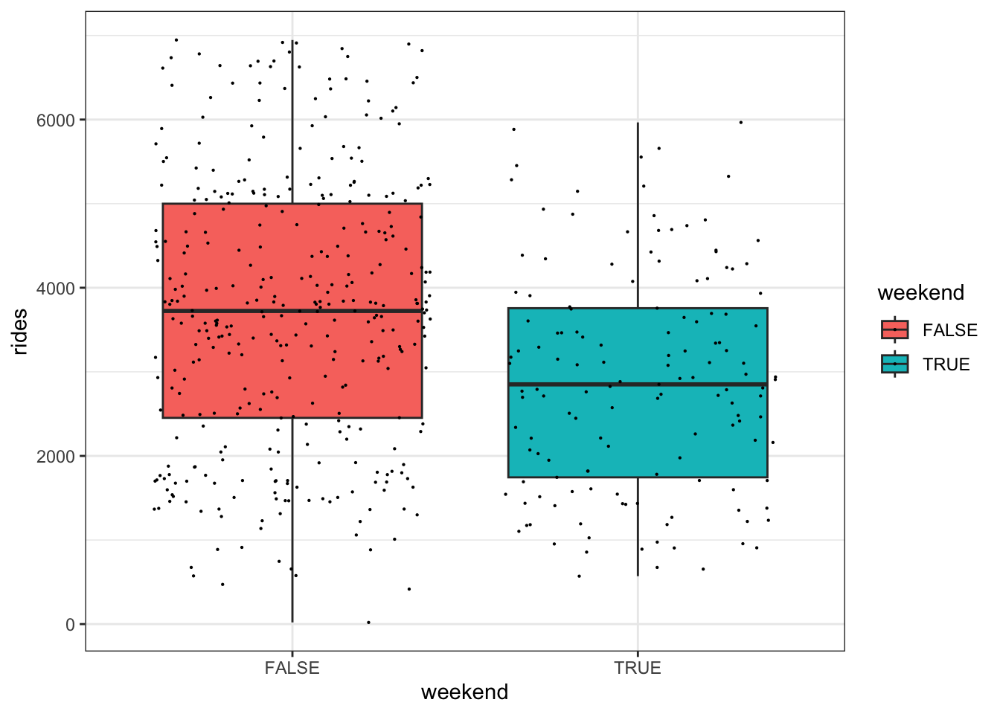
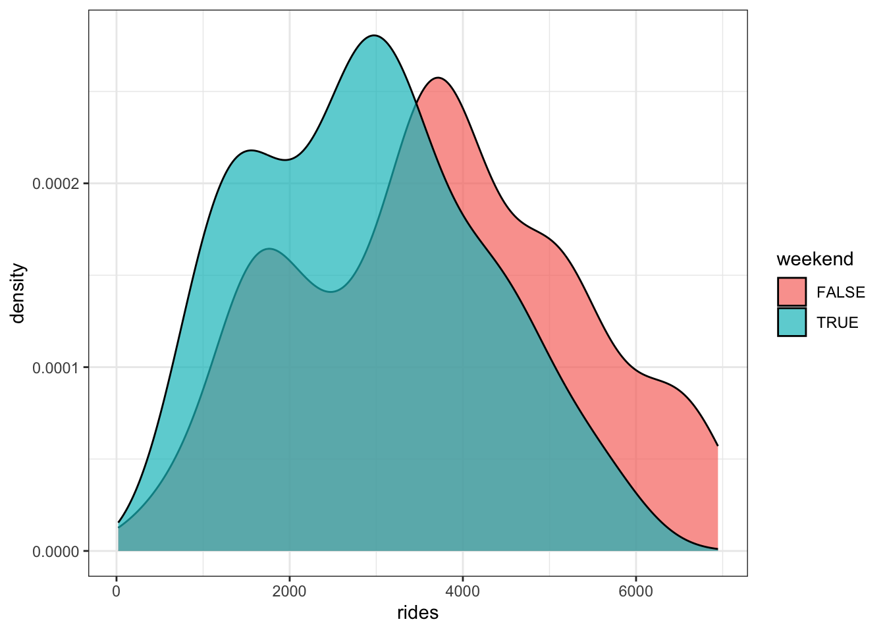
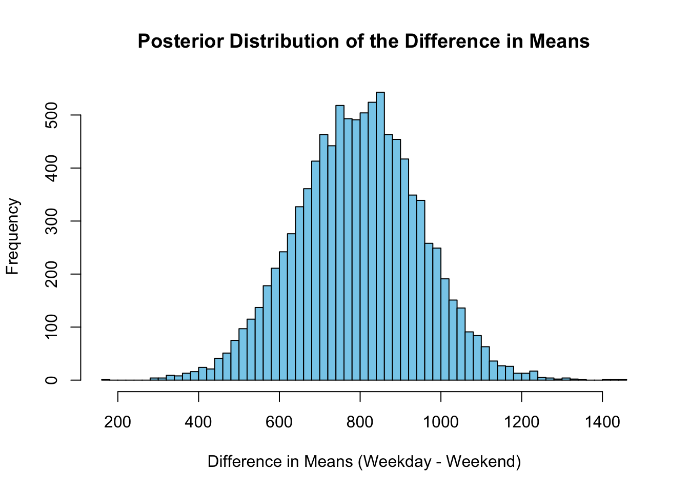
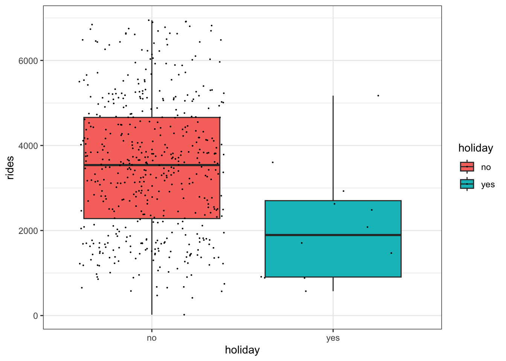
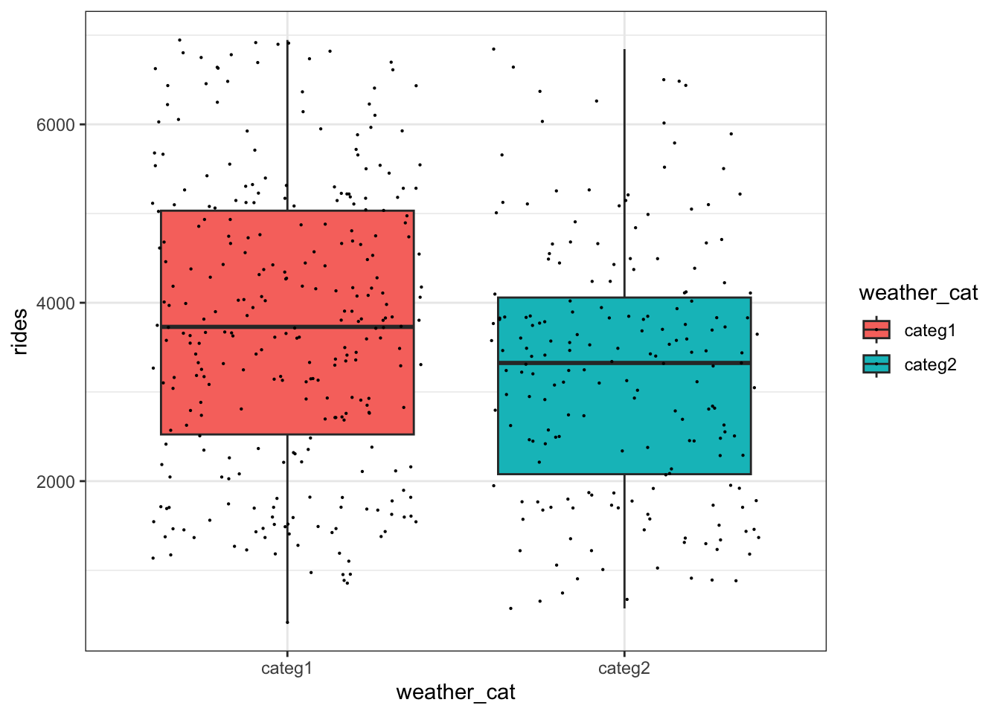
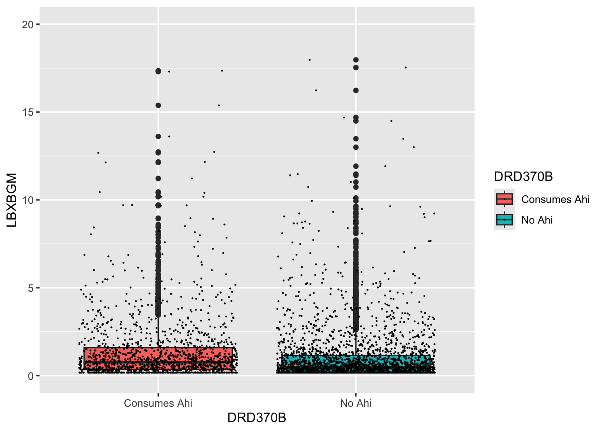
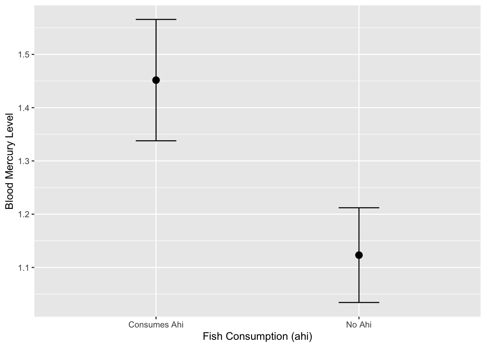
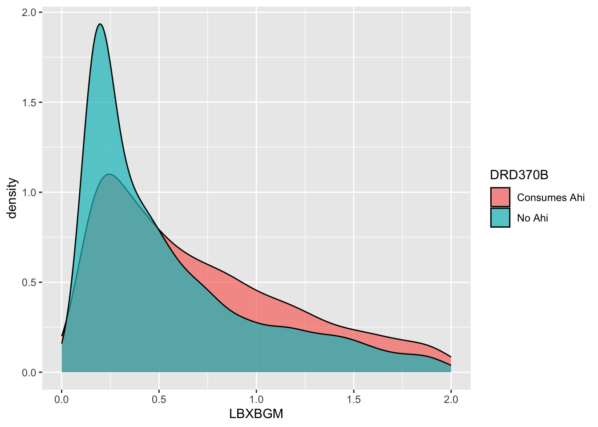
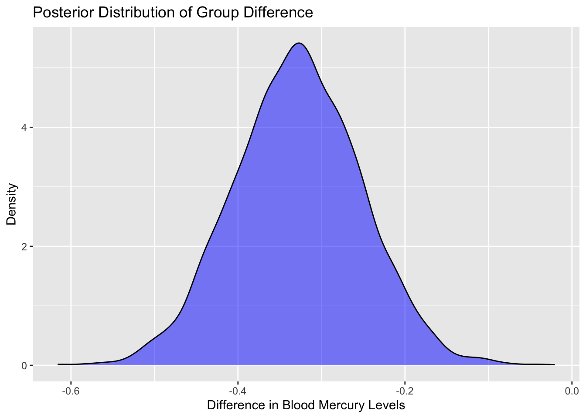
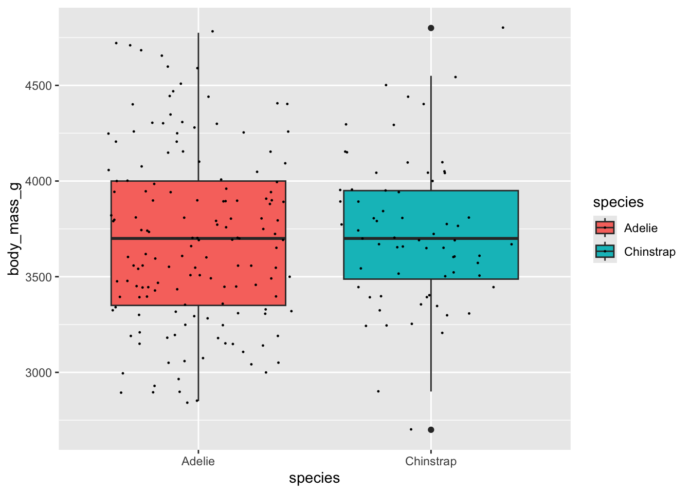

library(tidyverse)
library(bayesrules)
library(BayesFactor)
library(haven)
library(here)
library(Hmisc)
library(palmerpenguins)
options(scipen = 99)Bayesian Hypothesis Testing
Load Libraries
data(bikes)ggplot(data = bikes, aes(x = weekend, y = rides, fill = weekend)) +
geom_boxplot() +
geom_jitter(size = 0.1) +
theme_bw()
bikes %>%
group_by(weekend) %>%
summarise(mean_rides = mean(rides))# A tibble: 2 × 2
weekend mean_rides
<lgl> <dbl>
1 FALSE 3712.
2 TRUE 2897.ggplot(data = bikes, aes(x = rides, fill = weekend)) +
geom_density(alpha = 0.7) +
theme_bw()
ttestBF(
formula = rides ~ weekend, # Numeric variable on left, categorical on right
data = bikes
)Bayes factor analysis
--------------
[1] Alt., r=0.707 : 82395.03 ±0%
Against denominator:
Null, mu1-mu2 = 0
---
Bayes factor type: BFindepSample, JZSThresholds for interpreting Bayes Factors:
BF10 > 100: Extremely strong evidence for the alternative hypothesis (meaningful difference).
BF10 > 10: Strong evidence for the alternative hypothesis.
BF10 > 3: Moderate evidence for the alternative hypothesis.
BF10 ≈ 1: No evidence favoring one hypothesis over the other.
BF10 < 1/3: Moderate evidence for the null hypothesis.
BF10 < 1/10: Strong evidence for the null hypothesis.
Given that your BF10 = 82,395, the result provides overwhelming evidence that the number of rides differs between weekend and non-weekend days.
bf_result <- ttestBF(formula = rides ~ weekend, data = bikes)
# Draw posterior samples (10000 samples by default)
posterior_samples <- posterior(bf_result, iterations = 10000)
posterior_means <- posterior_samples[, "mu"] # Overall mean
posterior_difference <- posterior_samples[, "beta (FALSE - TRUE)"] # Difference in means
# Summary of the posterior difference
summary(posterior_difference)
Iterations = 1:10000
Thinning interval = 1
Number of chains = 1
Sample size per chain = 10000
1. Empirical mean and standard deviation for each variable,
plus standard error of the mean:
Mean SD Naive SE Time-series SE
797.678 150.226 1.502 1.756
2. Quantiles for each variable:
2.5% 25% 50% 75% 97.5%
503.3 696.4 797.4 899.9 1092.0 # Plot the posterior distribution of the difference
hist(posterior_difference, breaks = 50,
main = "Posterior Distribution of the Difference in Means",
xlab = "Difference in Means (Weekday - Weekend)", col = "skyblue")
# Calculate the 95% credible interval
credible_interval <- quantile(posterior_difference, probs = c(0.025, 0.975))
print(credible_interval) 2.5% 97.5%
503.3333 1092.0004 ggplot(data = bikes, aes(x = holiday, y = rides, fill = holiday)) +
geom_boxplot() +
geom_jitter(size = 0.1) +
theme_bw()
ttestBF(
formula = rides ~ holiday, # Numeric variable on left, categorical on right
data = bikes
)Bayes factor analysis
--------------
[1] Alt., r=0.707 : 15.1561 ±0%
Against denominator:
Null, mu1-mu2 = 0
---
Bayes factor type: BFindepSample, JZSbikes_cat_1_2 <- bikes %>%
filter(weather_cat %in% c("categ1", "categ2")) %>%
mutate(weather_cat = factor(weather_cat, levels = c("categ1", "categ2")))ggplot(data = bikes_cat_1_2, aes(x = weather_cat, y = rides, fill = weather_cat)) +
geom_boxplot() +
geom_jitter(size = 0.1) +
theme_bw()
ttestBF(
formula = rides ~ weather_cat, # Numeric variable on left, categorical on right
data = bikes_cat_1_2
)Bayes factor analysis
--------------
[1] Alt., r=0.707 : 44.74012 ±0%
Against denominator:
Null, mu1-mu2 = 0
---
Bayes factor type: BFindepSample, JZSNHANES
diet_behavior <- read_xpt(here("data/nhanes_data/DR1TOT_J.XPT"))
blood_hg <- read_xpt(here("data/nhanes_data/2017-2018_Hg-Blood.XPT"))
urine_hg <- read_xpt(here("data/nhanes_data/2017-2018_Hg-Urine.XPT"))
diabetes <- read_xpt(here("data/nhanes_data/2017-2018_Diabetes.XPT"))
demographics <- read_xpt(here("data/nhanes_data/2017-2018_Demographics.XPT"))Subset Read-in Datasets
Subset ‘diet_behavior’ as ‘diet’
diet <- select(diet_behavior, SEQN, DRD360, DRD370B, DRD370BQ, DRD370Q, DRD370QQ)Subset ‘diabetes’ as ‘tiid’
tiid <- select(diabetes, SEQN, DIQ010, DIQ170)Subset ‘blood_hg’ as ‘bhg’
bhg <- select(blood_hg, SEQN, LBXIHG, LBDIHGSI, LBXBGE, LBXBGM)Subset “urine_hg’ as ‘uhg’
uhg <- select(urine_hg, SEQN, URXUHG)Merge Subsets Into A Working Dataframe as ‘df’
df <- list(diet, tiid, bhg, uhg)
df <- df %>% reduce(full_join, by = 'SEQN')- Filter Dataframe df for the following:
# Assuming your dataframe is named `nhanes_data`
df <- df %>%
# Filter out rows where DIQ010 or DRD360 are NA
filter(!is.na(DIQ010), !is.na(DRD370B)) %>%
# Keep only rows where DIQ010 and DRD360 are 1 or 2
filter(DIQ010 %in% c(1, 2), DRD370B %in% c(1, 2)) %>%
# Recode 1 to "Yes" and 2 to "No" for DIQ010 and DRD360
mutate(
DIQ010 = ifelse(DIQ010 == 1, "Has Diabetes", "No Diabetes"),
DRD370B = ifelse(DRD370B == 1, "Consumes Ahi", "No Ahi")
)df <- df %>%
filter(!is.na(LBXBGM))ggplot(data = df, aes(x = DRD370B, y = LBXBGM, fill = DRD370B)) +
geom_boxplot() +
geom_jitter(size = 0.1) +
ylim(0,20)Warning: Removed 7 rows containing non-finite outside the scale range
(`stat_boxplot()`).Warning: Removed 7 rows containing missing values or values outside the scale range
(`geom_point()`).
ttestBF(
formula = LBXBGM ~ DRD370B, # Numeric variable on left, categorical on right
data = df
)Warning: data coerced from tibble to data frameBayes factor analysis
--------------
[1] Alt., r=0.707 : 606.6176 ±0%
Against denominator:
Null, mu1-mu2 = 0
---
Bayes factor type: BFindepSample, JZSlibrary(ggplot2)
ggplot(df, aes(x = DRD370B, y = LBXBGM)) +
stat_summary(fun = mean, geom = "point", size = 3) +
stat_summary(fun.data = mean_cl_normal, geom = "errorbar", width = 0.2) +
labs(x = "Fish Consumption (ahi)", y = "Blood Mercury Level")
ggplot(data = df, aes(x = LBXBGM, fill = DRD370B)) +
geom_density(alpha = 0.7) +
xlim(0, 2)Warning: Removed 621 rows containing non-finite outside the scale range
(`stat_density()`).
library(brms)Loading required package: RcppLoading 'brms' package (version 2.22.0). Useful instructions
can be found by typing help('brms'). A more detailed introduction
to the package is available through vignette('brms_overview').
Attaching package: 'brms'The following object is masked from 'package:stats':
armodel <- brm(LBXBGM ~ DRD370B, data = df, family = gaussian())Compiling Stan program...Start sampling
SAMPLING FOR MODEL 'anon_model' NOW (CHAIN 1).
Chain 1:
Chain 1: Gradient evaluation took 5e-05 seconds
Chain 1: 1000 transitions using 10 leapfrog steps per transition would take 0.5 seconds.
Chain 1: Adjust your expectations accordingly!
Chain 1:
Chain 1:
Chain 1: Iteration: 1 / 2000 [ 0%] (Warmup)
Chain 1: Iteration: 200 / 2000 [ 10%] (Warmup)
Chain 1: Iteration: 400 / 2000 [ 20%] (Warmup)
Chain 1: Iteration: 600 / 2000 [ 30%] (Warmup)
Chain 1: Iteration: 800 / 2000 [ 40%] (Warmup)
Chain 1: Iteration: 1000 / 2000 [ 50%] (Warmup)
Chain 1: Iteration: 1001 / 2000 [ 50%] (Sampling)
Chain 1: Iteration: 1200 / 2000 [ 60%] (Sampling)
Chain 1: Iteration: 1400 / 2000 [ 70%] (Sampling)
Chain 1: Iteration: 1600 / 2000 [ 80%] (Sampling)
Chain 1: Iteration: 1800 / 2000 [ 90%] (Sampling)
Chain 1: Iteration: 2000 / 2000 [100%] (Sampling)
Chain 1:
Chain 1: Elapsed Time: 0.08 seconds (Warm-up)
Chain 1: 0.066 seconds (Sampling)
Chain 1: 0.146 seconds (Total)
Chain 1:
SAMPLING FOR MODEL 'anon_model' NOW (CHAIN 2).
Chain 2:
Chain 2: Gradient evaluation took 1.3e-05 seconds
Chain 2: 1000 transitions using 10 leapfrog steps per transition would take 0.13 seconds.
Chain 2: Adjust your expectations accordingly!
Chain 2:
Chain 2:
Chain 2: Iteration: 1 / 2000 [ 0%] (Warmup)
Chain 2: Iteration: 200 / 2000 [ 10%] (Warmup)
Chain 2: Iteration: 400 / 2000 [ 20%] (Warmup)
Chain 2: Iteration: 600 / 2000 [ 30%] (Warmup)
Chain 2: Iteration: 800 / 2000 [ 40%] (Warmup)
Chain 2: Iteration: 1000 / 2000 [ 50%] (Warmup)
Chain 2: Iteration: 1001 / 2000 [ 50%] (Sampling)
Chain 2: Iteration: 1200 / 2000 [ 60%] (Sampling)
Chain 2: Iteration: 1400 / 2000 [ 70%] (Sampling)
Chain 2: Iteration: 1600 / 2000 [ 80%] (Sampling)
Chain 2: Iteration: 1800 / 2000 [ 90%] (Sampling)
Chain 2: Iteration: 2000 / 2000 [100%] (Sampling)
Chain 2:
Chain 2: Elapsed Time: 0.081 seconds (Warm-up)
Chain 2: 0.069 seconds (Sampling)
Chain 2: 0.15 seconds (Total)
Chain 2:
SAMPLING FOR MODEL 'anon_model' NOW (CHAIN 3).
Chain 3:
Chain 3: Gradient evaluation took 1.2e-05 seconds
Chain 3: 1000 transitions using 10 leapfrog steps per transition would take 0.12 seconds.
Chain 3: Adjust your expectations accordingly!
Chain 3:
Chain 3:
Chain 3: Iteration: 1 / 2000 [ 0%] (Warmup)
Chain 3: Iteration: 200 / 2000 [ 10%] (Warmup)
Chain 3: Iteration: 400 / 2000 [ 20%] (Warmup)
Chain 3: Iteration: 600 / 2000 [ 30%] (Warmup)
Chain 3: Iteration: 800 / 2000 [ 40%] (Warmup)
Chain 3: Iteration: 1000 / 2000 [ 50%] (Warmup)
Chain 3: Iteration: 1001 / 2000 [ 50%] (Sampling)
Chain 3: Iteration: 1200 / 2000 [ 60%] (Sampling)
Chain 3: Iteration: 1400 / 2000 [ 70%] (Sampling)
Chain 3: Iteration: 1600 / 2000 [ 80%] (Sampling)
Chain 3: Iteration: 1800 / 2000 [ 90%] (Sampling)
Chain 3: Iteration: 2000 / 2000 [100%] (Sampling)
Chain 3:
Chain 3: Elapsed Time: 0.079 seconds (Warm-up)
Chain 3: 0.073 seconds (Sampling)
Chain 3: 0.152 seconds (Total)
Chain 3:
SAMPLING FOR MODEL 'anon_model' NOW (CHAIN 4).
Chain 4:
Chain 4: Gradient evaluation took 1.2e-05 seconds
Chain 4: 1000 transitions using 10 leapfrog steps per transition would take 0.12 seconds.
Chain 4: Adjust your expectations accordingly!
Chain 4:
Chain 4:
Chain 4: Iteration: 1 / 2000 [ 0%] (Warmup)
Chain 4: Iteration: 200 / 2000 [ 10%] (Warmup)
Chain 4: Iteration: 400 / 2000 [ 20%] (Warmup)
Chain 4: Iteration: 600 / 2000 [ 30%] (Warmup)
Chain 4: Iteration: 800 / 2000 [ 40%] (Warmup)
Chain 4: Iteration: 1000 / 2000 [ 50%] (Warmup)
Chain 4: Iteration: 1001 / 2000 [ 50%] (Sampling)
Chain 4: Iteration: 1200 / 2000 [ 60%] (Sampling)
Chain 4: Iteration: 1400 / 2000 [ 70%] (Sampling)
Chain 4: Iteration: 1600 / 2000 [ 80%] (Sampling)
Chain 4: Iteration: 1800 / 2000 [ 90%] (Sampling)
Chain 4: Iteration: 2000 / 2000 [100%] (Sampling)
Chain 4:
Chain 4: Elapsed Time: 0.08 seconds (Warm-up)
Chain 4: 0.063 seconds (Sampling)
Chain 4: 0.143 seconds (Total)
Chain 4: summary(model) Family: gaussian
Links: mu = identity; sigma = identity
Formula: LBXBGM ~ DRD370B
Data: df (Number of observations: 3909)
Draws: 4 chains, each with iter = 2000; warmup = 1000; thin = 1;
total post-warmup draws = 4000
Regression Coefficients:
Estimate Est.Error l-95% CI u-95% CI Rhat Bulk_ESS Tail_ESS
Intercept 1.45 0.06 1.33 1.57 1.00 3817 2724
DRD370BNoAhi -0.33 0.08 -0.48 -0.18 1.00 3360 2622
Further Distributional Parameters:
Estimate Est.Error l-95% CI u-95% CI Rhat Bulk_ESS Tail_ESS
sigma 2.24 0.03 2.19 2.29 1.00 4886 3141
Draws were sampled using sampling(NUTS). For each parameter, Bulk_ESS
and Tail_ESS are effective sample size measures, and Rhat is the potential
scale reduction factor on split chains (at convergence, Rhat = 1).posterior <- posterior_samples(model)Warning: Method 'posterior_samples' is deprecated. Please see ?as_draws for
recommended alternatives.ggplot(posterior, aes(x = b_DRD370BNoAhi)) +
geom_density(fill = "blue", alpha = 0.5) +
labs(
title = "Posterior Distribution of Group Difference",
x = "Difference in Blood Mercury Levels",
y = "Density"
)
We love penguins
penguins_sub <- subset(penguins, species %in% c("Chinstrap", "Adelie"))
penguins_sub$species <- droplevels(penguins_sub$species) # Drop unused levels
# Remove rows with missing values in body_mass_g
penguins_clean <- penguins_sub[!is.na(penguins_sub$body_mass_g), ]ggplot(data = penguins_clean, aes(x = species, y = body_mass_g, fill = species)) +
geom_boxplot() +
geom_jitter(size = 0.2)
ttestBF(
formula = body_mass_g ~ species,
data = penguins_clean
)Warning: data coerced from tibble to data frameBayes factor analysis
--------------
[1] Alt., r=0.707 : 0.1787903 ±0.06%
Against denominator:
Null, mu1-mu2 = 0
---
Bayes factor type: BFindepSample, JZS